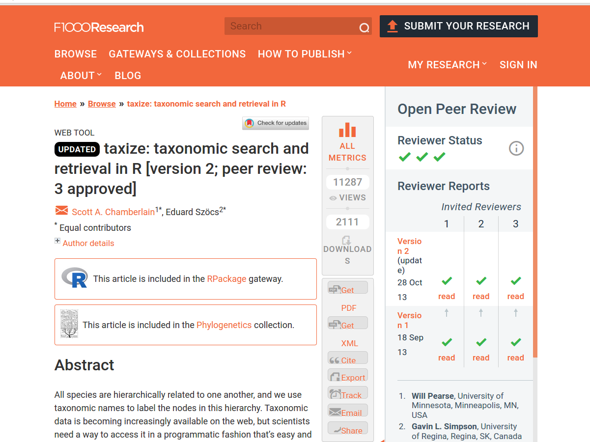
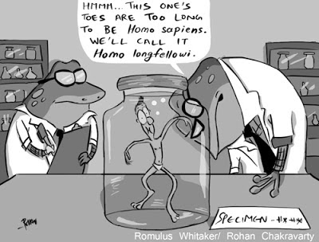
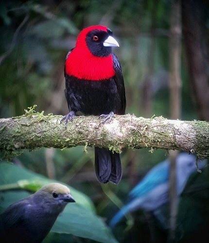

Reproducibilidad en el uso de información
taxonómica
Herramientas prácticas para investigación
reproducible
Marcelo
Araya-Salas, PhD
“2022-10-21”
Introducción
Un aspecto de reproducibilidad científica que es específico de las ciencias biológicas es cómo se obtiene, usa y reporta la información taxonómica. En la discusión tratamos los temas del uso de vouchers y la importancia de documentar adecuadamente la justificación de identificaciones taxonómicas. Aquí vamos a ver una herramienta para obtener y curar información taxonómica de manera reproducible.
Vamos a usar el paquete en R ‘taxize’. Por cierto, el artículo que describe el paquete fue publicado en la revista F1000Research, una de las revistas que vimos al comienzo del semestre es completamente abierta.

¿Por qué ‘taxize’?
Existen bases de datos en línea de las que se puede obtener información taxonómica para diversos organismos biológicos. Pero existen ventajas de hacer estás búsquedas de manera programática:
- es más eficiente si tiene que buscar bastantes taxones
- la búsqueda se convierte en una parte reproducible del flujo de trabajo
La idea de taxize es hacer la extracción y uso de la iformación taxonómica fácil y reproducible.

Imagen: Rohan Chakravarty/CC BY-NC-ND 3.0.
¿Qué hace ‘taxize’?
‘taxize’ se conecta con varias bases de datos taxonómicas y más pueden ir siendo agregagas paulatinamente. Esta información se puede utilizar para llevar a cabo tareas comunes en el proceso de investigación. Por ejemplo:
Resuelve nombres taxonómicos
Si tenemos una lista de especímenes, posiblemente queremos saber si estamos usando nombres actualizados y si los nombres que tenemos están escritos correctamente. Podemos hacer esto usando la aplicación Global Names Resolver (GNR) de la Encyclopedia of Life, a través de taxize.
Como un ejemplo, veamos los datos de ocurrencia que bajé de GBIF. Bajé los registros de pajaritos del género Ramphocelus en Costa Rica, en la Colección Nacional de Zoología. Tal vez, estoy haciendo o planeo hacer un trabajo con estos espécimenes.
Los datos están aquí (https://doi.org/10.15468/dl.d8frtc)
y este es un ejemplo del pajarito:

Ramphocelus sanguinolentus, La Fortuna, Costa Rica
# leamos los datos
dat <- read.csv(file = "./additional_files/0098054-200613084148143.csv",
header = T, sep = "\t")
# cuales son las especies en CR?
Ram.names <- levels(dat$species)
Ram.names## NULLVeamos cuáles bases de datos puedo usar para buscar los nombres de mis especies
require(taxize)
require(kableExtra)
data.sources <- gnr_datasources()
data.sources[, c(1, 5, 8, 9)] %>%
kbl() %>%
kable_minimal()| created_at | id | refresh_period_days | title |
|---|---|---|---|
| 2012-07-06T11:36:36Z | 1 | 14 | Catalogue of Life Checklist |
| 2012-07-06T11:38:14Z | 2 | 14 | Wikispecies |
| 2012-02-09T10:31:13Z | 3 | 14 | Integrated Taxonomic Information SystemITIS |
| 2012-02-09T10:47:55Z | 4 | 14 | National Center for Biotechnology Information |
| 2012-02-09T11:16:43Z | 5 | 14 | Index Fungorum (Species Fungorum) |
| 2012-02-09T11:28:38Z | 6 | 14 | GRIN Taxonomy for Plants |
| 2012-02-09T11:32:18Z | 7 | 14 | Union 4 |
| 2012-02-09T12:08:54Z | 8 | 14 | The Interim Register of Marine and Nonmarine Genera |
| 2012-02-09T12:40:45Z | 9 | 14 | World Register of Marine Species |
| 2012-02-09T12:55:04Z | 10 | 14 | Freebase |
| 2012-02-09T13:01:40Z | 11 | 14 | GBIF Backbone Taxonomy |
| 2012-02-09T15:36:33Z | 12 | 14 | Encyclopedia of Life |
| 2012-02-09T18:21:08Z | 93 | 14 | Passiflora vernacular names |
| 2012-02-09T18:21:09Z | 94 | 14 | Inventory of Fish Species in the Wami River Basin |
| 2012-02-09T18:21:09Z | 95 | 14 | Pheasant Diversity and Conservation in the Mt. Gaoligonshan Region |
| 2012-02-09T18:21:09Z | 96 | 14 | Finding Species |
| 2012-02-09T18:21:10Z | 97 | 14 | Birds of Lindi Forests Plantation |
| 2012-02-09T18:21:11Z | 98 | 14 | Nemertea |
| 2012-02-09T18:21:12Z | 99 | 14 | Kihansi Gorge Amphibian Species Checklist |
| 2012-02-09T18:21:12Z | 100 | 14 | Mushroom Observer |
| 2012-02-09T18:21:14Z | 101 | 14 | TaxonConcept |
| 2012-02-09T18:21:15Z | 102 | 14 | Amphibia and Reptilia of Yunnan |
| 2012-02-09T18:21:17Z | 103 | 14 | Common names of Chilean Plants |
| 2012-07-06T11:49:07Z | 104 | 14 | Invasive Species of Belgium |
| 2012-02-09T18:21:20Z | 105 | 14 | ZooKeys |
| 2012-02-09T18:21:23Z | 106 | 14 | COA Wildlife Conservation List |
| 2012-02-09T18:21:25Z | 107 | 14 | AskNature |
| 2012-02-09T18:21:31Z | 108 | 14 | China: Yunnan, Southern Gaoligongshan, Rapid Biological Inventories Report No. 04 |
| 2012-02-09T18:21:34Z | 109 | 14 | Native Orchids from Gaoligongshan Mountains, China |
| 2012-02-09T18:21:37Z | 110 | 14 | Illinois Wildflowers |
| 2012-02-09T18:21:45Z | 112 | 14 | Coleorrhyncha Species File |
| 2012-02-09T18:21:46Z | 113 | 14 | /home/dimus/files/dwca/zoological names.zip |
| 2012-02-09T18:21:57Z | 114 | 14 | Peces de la zona hidrogeográfica de la Amazonia, Colombia (Spreadsheet) |
| 2012-02-09T18:22:04Z | 115 | 14 | Eastern Mediterranean Syllidae |
| 2012-02-09T18:22:06Z | 116 | 14 | Gaoligong Shan Medicinal Plants Checklist |
| 2012-02-09T18:22:14Z | 117 | 14 | birds_of_tanzania |
| 2012-02-09T18:22:23Z | 118 | 14 | AmphibiaWeb |
| 2012-02-09T18:22:38Z | 119 | 14 | tanzania_plant_sepecimens |
| 2012-02-09T18:22:45Z | 120 | 14 | Papahanaumokuakea Marine National Monument |
| 2012-02-09T18:23:21Z | 121 | 14 | Taiwanese IUCN species list |
| 2012-02-09T18:23:27Z | 122 | 14 | BioPedia |
| 2012-02-09T18:24:06Z | 123 | 14 | AnAge |
| 2012-02-09T18:24:25Z | 124 | 14 | Embioptera Species File |
| 2012-02-09T18:24:28Z | 125 | 14 | Global Invasive Species Database |
| 2012-02-09T18:24:38Z | 126 | 14 | Sendoya S., Fernández F. AAT de hormigas (Hymenoptera: Formicidae) del Neotrópico 1.0 2004 (Spreadsheet) |
| 2012-02-09T18:25:00Z | 127 | 14 | Flora of Gaoligong Mountains |
| 2012-02-09T18:25:16Z | 128 | 14 | ARKive |
| 2012-02-09T18:25:27Z | 129 | 14 | True Fruit Flies (Diptera, Tephritidae) of the Afrotropical Region |
| 2012-02-09T18:25:30Z | 130 | 14 | 3i - Typhlocybinae Database |
| 2012-02-09T18:26:09Z | 131 | 14 | CATE Sphingidae |
| 2012-02-09T18:26:28Z | 132 | 14 | ZooBank |
| 2012-02-09T18:26:44Z | 133 | 14 | Diatoms |
| 2012-02-09T18:27:14Z | 134 | 14 | AntWeb |
| 2012-02-09T18:27:40Z | 135 | 14 | Endemic species in Taiwan |
| 2012-02-09T18:28:15Z | 136 | 14 | Dermaptera Species File |
| 2012-02-09T18:28:21Z | 137 | 14 | Mantodea Species File |
| 2012-02-09T18:28:29Z | 138 | 14 | Birds of the World: Recommended English Names |
| 2012-02-09T18:29:01Z | 139 | 14 | New Zealand Animalia |
| 2012-02-09T18:30:39Z | 140 | 14 | Blattodea Species File |
| 2012-02-09T18:30:57Z | 141 | 14 | Plecoptera Species File |
| 2012-02-09T18:31:58Z | 143 | 14 | Coreoidea Species File |
| 2012-02-09T18:32:28Z | 144 | 14 | Freshwater Animal Diversity Assessment - Normalized export |
| 2012-02-09T18:33:38Z | 145 | 14 | Catalogue of Vascular Plant Species of Central and Northeastern Brazil |
| 2012-02-09T18:35:12Z | 146 | 14 | Wikipedia in EOL |
| 2012-02-09T18:36:49Z | 147 | 14 | Database of Vascular Plants of Canada (VASCAN) |
| 2012-02-09T18:38:13Z | 148 | 14 | Phasmida Species File |
| 2012-02-09T18:38:29Z | 149 | 14 | OBIS |
| 2012-02-09T18:40:09Z | 150 | 14 | USDA NRCS PLANTS Database |
| 2012-02-09T18:42:04Z | 151 | 14 | Catalog of Fishes |
| 2012-02-09T18:43:41Z | 152 | 14 | Aphid Species File |
| 2012-02-09T18:44:03Z | 153 | 14 | The National Checklist of Taiwan |
| 2012-02-09T18:46:06Z | 154 | 14 | Psocodea Species File |
| 2012-02-09T18:46:24Z | 155 | 14 | FishBase |
| 2012-02-09T18:48:19Z | 156 | 14 | 3i - Typhlocybinae Database |
| 2012-02-09T18:48:44Z | 157 | 14 | Belgian Species List |
| 2012-02-09T18:51:49Z | 158 | 14 | EUNIS |
| 2012-02-09T18:58:36Z | 159 | 14 | CU*STAR |
| 2012-02-09T19:10:42Z | 161 | 14 | Orthoptera Species File |
| 2012-02-09T19:11:37Z | 162 | 14 | Bishop Museum |
| 2012-02-09T19:18:20Z | 163 | 14 | IUCN Red List of Threatened Species |
| 2012-02-09T19:20:46Z | 164 | 14 | BioLib.cz |
| 2012-02-09T19:43:03Z | 165 | 14 | Tropicos - Missouri Botanical Garden |
| 2012-02-09T20:05:41Z | 166 | 14 | nlbif |
| 2012-02-09T20:36:27Z | 167 | 14 | The International Plant Names Index |
| 2012-05-07T13:45:07Z | 168 | 14 | Index to Organism Names |
| 2012-05-07T13:50:15Z | 169 | 14 | uBio NameBank |
| 2013-05-31T01:17:28Z | 170 | 14 | Arctos |
| 2013-12-10T03:02:58Z | 171 | 14 | Checklist of Beetles (Coleoptera) of Canada and Alaska. Second Edition. |
| 2014-12-08T11:17:24Z | 172 | 14 | The Paleobiology Database |
| 2014-12-08T19:50:56Z | 173 | 14 | The Reptile Database |
| 2014-12-09T21:27:18Z | 174 | 14 | The Mammal Species of The World |
| 2014-12-11T00:19:59Z | 175 | 14 | BirdLife International |
| 2015-03-03T13:48:51Z | 176 | 14 | Checklist da Flora de Portugal (Continental, Açores e Madeira) |
| 2016-07-20T11:13:25Z | 177 | 14 | FishBase Cache |
| 2016-10-18T20:00:31Z | 178 | 14 | Silva |
| 2016-10-19T10:13:10Z | 179 | 14 | Open Tree of Life Reference Taxonomy |
| 2016-10-30T00:46:40Z | 180 | 14 | iNaturalist |
| 2016-11-03T16:09:05Z | 181 | 14 | The Interim Register of Marine and Nonmarine Genera |
| 2017-03-22T15:26:50Z | 182 | 14 | Gymno |
| 2020-05-25T02:43:22Z | 183 | 14 | Index Animalium |
| 2020-05-25T10:32:16Z | 184 | 14 | ASM Mammal Diversity Database |
| 2020-05-27T01:41:11Z | 185 | 14 | IOC World Bird List |
| 2020-05-28T00:01:22Z | 186 | 14 | MCZbase |
| 2020-05-28T16:50:17Z | 187 | 14 | The eBird/Clements Checklist of Birds of the World |
| 2020-05-30T00:58:32Z | 188 | 14 | American Ornithological Society |
| 2020-05-31T00:36:35Z | 189 | 14 | Howard and Moore Complete Checklist of the Birds of the World |
| 2020-05-31T01:23:24Z | 193 | 14 | Myriatrix |
| 2021-03-19T16:48:41Z | 194 | 14 | PLAZI treatments |
| 2021-10-21T12:27:48Z | 195 | 14 | AlgaeBase |
| 2021-12-28T13:04:34Z | 196 | 14 | World Flora Online consortium |
| 2021-12-29T13:29:11Z | 197 | 14 | World Checklist of Vascular Plants |
| 2021-12-30T14:32:51Z | 198 | 14 | The Leipzig Catalogue of Vascular Plants |
| 2022-01-14T22:16:40Z | 200 | 14 | The Terrestrial Parasite Tracker |
| 2022-02-14T15:59:43Z | 201 | 14 | ICTV Virus Taxonomy |
| 2022-02-18T21:58:40Z | 202 | 14 | Discover Life Bee Species Guide |
Revisemos si están escritos correctamente
name.res <- gnr_resolve(sci = Ram.names, data_source_ids = c(3:4))
name.res[, -1] %>%
kbl() %>%
kable_minimal()¿Y si no lo estuvieran?
Ram.names2 <- Ram.names
Ram.names2[2] <- "Ramphocelus passerini"
name.res2 <- gnr_resolve(sci = Ram.names2, data_source_ids = c(3:4))
name.res2[, -1] %>%
kbl() %>%
kable_minimal()| submitted_name | matched_name | data_source_title | score |
|---|---|---|---|
| Ramphocelus passerini | Ramphocelus passerinii Bonaparte, 1831 | Integrated Taxonomic Information SystemITIS | 0.75 |
| Ramphocelus passerini | Ramphocelus passerinii | National Center for Biotechnology Information | 0.75 |
Identifica sinónimos
Busquemos si hay sinónimos para estas especies
Para usar algunas bases de datos es necesario obtener un ‘API key’ Esto no se puede hacer automáticamente con ‘taxize’ pero se puede obtener instrucciones de cómo obtener y guardar el API key para usarlo desde R. Veamos un par de ejemplos:
use_tropicos()
use_iucn()
use_entrez()
# para más información
`?`(key_helpers())
`?`(`taxize-authentication`)Ejercicio 1
- Instale el paquete ‘usethis’ con el commando
install.packages("usethis") - Obtenga el ‘API key’ para una base de datos de su interés
- Añada este ‘API key’ a su ambiente en R con el comando
usethis::edit_r_environ() - Reinicie R y verifique que tiene el ‘API key’ usando
getkey() - Si todo salió bien, ya lo vamos a usar.
Extrae clasificación taxonómica
Podemos obtener información sobre la clasificación taxonómica superior de nuestras especies. Si su clave es para ‘tropicos’ o ‘entrez’ puede usar las bases de datos respectivas (tropicos y ncbi). Por ejemplo:
y si sólo queremos saber la familia…
Ram.fam <- tax_name(sci = Ram.names, get = "family", db = "ncbi")
Ram.fam %>%
kbl() %>%
kable_minimal()Obtiene los nombres corriente abajo
Ta vez queremos saber cuáles o cuántos son los miembros de un cierto grupo taxonómico. Por ejemplo, ¿cuántas especies hay en el género Ramphocelus?
Obtiene información del estado de conservación
Si tienen el ‘API key’ para IUCN, pueden obtener información sobre el estado de consevación.
OJO: los autores de ‘taxize’ advierten usar con mucho cuidado ya que puede haber errores
Ejemplos de aplicaciones en ciencia reproducible
Veamos algunos ejemplos de cómo usar herramientas como ’taxize’contribuyen a investigación más reproducible.
Listas de hospederos en miles de comunidades

Artículo de Gibb et al. 2020, Nature
De la sección de métodos:
“We compiled animal host–pathogen associations from several source databases, to provide as comprehensive a dataset as possible of zoonotic host species and their pathogens: the Enhanced Infectious Diseases (EID2) database; the Global Mammal Parasite Database v.2.0 (GMPD2) which collates records of parasites of cetartiodactyls, carnivores and primates; a reservoir hosts database; a mammal–virus associations database; and a rodent zoonotic reservoirs database augmented with pathogen data from the Global Infectious Disease and Epidemiology Network (GIDEON) (Supplementary Table 8). We harmonized species names across all databases, excluding instances in which either hosts or pathogens could not be classified to species level. To prevent erroneous matches due to misspelling or taxonomic revision, all host species synonyms were accessed from Catalogue Of Life using ‘taxize’ v.0.8.939. Combined, the dataset contained 20,382 associations between 3,883 animal host species and 5,694 pathogen species.”
Veamos el código del artículo y hagamos una pequeña modificación para aplicar la función a nuestros datos
# taxize/GBIFr
require(taxize)
require(rgbif)
library(plyr)
# function to find and resolve taxonomic synonyms based on
# Encyclopedia of Life
findSyns2 = function(x) {
# get specific species name taxname = hosts_vec[x] un cambio
# pequenio para usar la funcion con nuestros datos
taxname = x
# print progress
print(paste("Processing:", taxname, sep = " "))
# phyla
phyla = c("Chordata", "Arthropoda", "Gastropoda", "Mollusca")
# (1) resolve misspellings
taxname_resolved = gnr_resolve(taxname, with_canonical_ranks = TRUE)$matched_name2[1]
if (!is.null(taxname_resolved)) {
if (length(strsplit(taxname_resolved, " ", fixed = TRUE)[[1]]) ==
2) {
taxa = taxname_resolved
}
}
if (!is.null(taxname_resolved)) {
if (length(strsplit(taxname_resolved, " ", fixed = TRUE)[[1]]) >
2) {
taxa = paste(strsplit(taxname_resolved, " ", fixed = TRUE)[[1]][1:2],
collapse = " ")
}
}
# if taxa == NA, return list with nothing defined
if (is.na(taxa)) {
if (class(syns)[1] == "simpleError") {
return(data.frame(Original = taxname, Submitted = taxname_resolved,
Accepted_name = NA, Selected_family = NA, Selected_order = NA,
Selected_class = NA, Synonyms = NA))
}
}
# (2) remove sub-species categorisations and set 'genus' and
# 'species' variables
genus = NULL
if (length(strsplit(taxa, " ", fixed = TRUE)[[1]]) %in% c(2, 3)) {
genus = strsplit(taxa, " ", fixed = TRUE)[[1]][1]
species = strsplit(taxa, " ", fixed = TRUE)[[1]][2]
}
if (length(strsplit(taxa, "_", fixed = TRUE)[[1]]) %in% c(2, 3)) {
genus = strsplit(taxa, "_", fixed = TRUE)[[1]][1]
species = strsplit(taxa, "_", fixed = TRUE)[[1]][2]
}
if (length(strsplit(taxa, " ", fixed = TRUE)[[1]]) > 3 | length(strsplit(taxa,
"_", fixed = TRUE)[[1]][1]) > 3) {
return("name error")
}
if (is.null(genus)) {
genus = taxa
species = NA
}
# (3) use genus to lookup family, order, class
syns = tryCatch(name_lookup(genus)$data, error = function(e) e)
if (class(syns)[1] == "simpleError") {
return(data.frame(Original = taxname, Submitted = taxa, Accepted_name = NA,
Selected_family = NA, Selected_order = NA, Selected_class = NA,
Synonyms = NA))
}
# for cases where the lookup does not find a phylum within
# the specified range
if (all(!syns$phylum %in% phyla)) {
fam1 = syns$family[!is.na(syns$family) & !is.na(syns$phylum)]
order1 = syns$order[!is.na(syns$family) & !is.na(syns$phylum)]
class1 = syns$class[!is.na(syns$family) & !is.na(syns$phylum)]
datfam = data.frame(fam1 = fam1, order = 1:length(fam1), order1 = order1,
class1 = class1)
# select highest frequency fam/class/order combo
fam2 = as.data.frame(table(datfam[, c(1, 3, 4)]))
family2 = as.vector(fam2[fam2$Freq == max(fam2$Freq, na.rm = TRUE),
"fam1"])
order2 = as.vector(fam2[fam2$Freq == max(fam2$Freq, na.rm = TRUE),
"order1"])
class2 = as.vector(fam2[fam2$Freq == max(fam2$Freq, na.rm = TRUE),
"class1"])
if (length(fam2) > 1) {
datfam2 = datfam[datfam$fam1 %in% family2, ]
family2 = as.vector(datfam2[datfam2$order == min(datfam2$order,
na.rm = TRUE), "fam1"])
order2 = as.vector(datfam2[datfam2$order == min(datfam2$order,
na.rm = TRUE), "order1"])
class2 = as.vector(datfam2[datfam2$order == min(datfam2$order,
na.rm = TRUE), "class1"])
}
} else {
# for everything else
fam1 = syns$family[!is.na(syns$family) & !is.na(syns$phylum) &
(syns$phylum %in% phyla)]
order1 = syns$order[!is.na(syns$family) & !is.na(syns$phylum) &
(syns$phylum %in% phyla)]
class1 = syns$class[!is.na(syns$family) & !is.na(syns$phylum) &
(syns$phylum %in% phyla)]
datfam = data.frame(fam1 = fam1, order = 1:length(fam1), order1 = order1,
class1 = class1)
# select highest frequency fam/class/order combo
fam2 = as.data.frame(table(datfam[, c(1, 3, 4)]))
family2 = as.vector(fam2[fam2$Freq == max(fam2$Freq, na.rm = TRUE),
"fam1"])
order2 = as.vector(fam2[fam2$Freq == max(fam2$Freq, na.rm = TRUE),
"order1"])
class2 = as.vector(fam2[fam2$Freq == max(fam2$Freq, na.rm = TRUE),
"class1"])
# select highest in list if more than one max
if (length(family2) > 1) {
datfam2 = datfam[datfam$fam1 %in% family2, ]
family2 = as.vector(datfam2[datfam2$order == min(datfam2$order,
na.rm = TRUE), "fam1"])
order2 = as.vector(datfam2[datfam2$order == min(datfam2$order,
na.rm = TRUE), "order1"])
class2 = as.vector(datfam2[datfam2$order == min(datfam2$order,
na.rm = TRUE), "class1"])
}
}
# (4) search for species synonyms in ITIS
syns = tryCatch(suppressMessages(synonyms(taxa, db = "itis")),
error = function(e) e)
if (class(syns)[1] == "simpleError") {
return(data.frame(Original = taxname, Submitted = taxa, Accepted_name = "failed",
Selected_family = family2, Selected_order = order2, Selected_class = class2,
Synonyms = "failed"))
}
syns = as.data.frame(syns[[1]])
# get info
original = taxa
accepted_name = taxa # save accepted name as original searched name
if ("acc_name" %in% names(syns))
{
accepted_name = syns$acc_name
} # unless search shows that this is not the accepted name
if ("syn_name" %in% names(syns)) {
synonyms = unique(syns$syn_name)
} else {
synonyms = NA
}
# combine into list and add synonyms
result = data.frame(Original = taxname, Submitted = taxa, Accepted_name = accepted_name,
Selected_family = family2, Selected_order = order2, Selected_class = class2)
result = do.call("rbind", replicate(length(synonyms), result[1,
], simplify = FALSE))
result$Synonyms = synonyms
return(result)
}
# nest function within a tryCatch call in case of any errors
findSyns3 = function(x) {
result = tryCatch(findSyns2(x), error = function(e) NULL)
return(result)
}Antes vimos que hay un nombre que es sinónimo de Ramphocelus sanguinolentus ¿qué haría la función de Gibb et al con ese?
## [1] "Processing: Phlogothraupis sanguinolenta"
## ══ 1 queries ═══════════════
## ✓ Found: Phlogothraupis sanguinolenta
## ══ Results ═════════════════
##
## • Total: 1
## • Found: 1
## • Not Found: 0| Original | Submitted | Accepted_name | Selected_family | Selected_order | Selected_class | Synonyms |
|---|---|---|---|---|---|---|
| Phlogothraupis sanguinolenta | Phlogothraupis sanguinolenta | Ramphocelus sanguinolentus | Thraupidae | Passeriformes | Aves | Phlogothraupis sanguinolenta |
¿Y con uno que está mal escrito?
## [1] "Processing: Ramphocelus passerini"
## ══ 1 queries ═══════════════
## ✓ Found: Ramphocelus passerinii
## ══ Results ═════════════════
##
## • Total: 1
## • Found: 1
## • Not Found: 0| Original | Submitted | Accepted_name | Selected_family | Selected_order | Selected_class | Synonyms |
|---|---|---|---|---|---|---|
| Ramphocelus passerini | Ramphocelus passerinii | Ramphocelus passerinii | Thraupidae | Passeriformes | Aves | NA |
Manejo de datos de cámaras trampa

Artículo de Niedballa et al. 2016,Methods Ecol. Evol.
De la sección de métodos:
“Users are free to use any species names (or abbreviations or codes) they wish. If scientific or common species names are used, the function checkSpeciesNames can check them against the ITIS taxonomic database (www.itis.gov) and returns their matching counterparts (utilizing the R package taxize (Chamberlain & Szöcs 2013) internally), making sure species names and spelling are standardized and taxonomically sound, and thus making it easier to combine data sets from different studies.”
Veamos algunos ejemplos del las viñetas de camtrapR. No vamos a bajar el paquete, porque la versión de CRAN de ‘camtrapR’ no es compatible con la versión de CRAN de ‘taxize’

Vamos a reescribir la función actualizando los argumentos de ‘taxize’
checkSpeciesNames <- function(speciesNames, searchtype, accepted = TRUE,
ask = TRUE) {
if (!requireNamespace("taxize", quietly = TRUE)) {
stop("Please install the package taxize to run this function")
}
if (!requireNamespace("ritis", quietly = TRUE)) {
stop("Please install the package ritis to run this function")
}
searchtype <- match.arg(searchtype, choices = c("scientific",
"common"))
stopifnot(is.logical(accepted))
stopifnot(is.character(speciesNames) | is.factor(speciesNames))
speciesNames <- unique(as.character(speciesNames))
file.sep <- .Platform$file.sep
tsns <- try(taxize::get_tsn(sci_com = speciesNames, searchtype = searchtype,
accepted = accepted, ask = ask, messages = FALSE))
if (inherits(tsns, "try-error")) {
message(paste("error in get_tsn. Exiting without results:\n",
tsns, sep = ""))
return(invisible(NULL))
}
tsns <- taxize::as.tsn(unique(tsns), check = FALSE)
if (any(is.na(tsns))) {
not.matched <- which(is.na(tsns))
warning(paste("found no matches for", length(not.matched),
"name(s):\n", paste(speciesNames[not.matched], collapse = ", ")),
immediate. = TRUE, call. = FALSE)
tsns_worked <- taxize::as.tsn(tsns[-not.matched], check = FALSE)
} else {
tsns_worked <- tsns
}
if (length(tsns_worked) >= 1) {
scientific <- common <- author <- rankname <- taxon_status <- data.frame(matrix(NA,
nrow = length(tsns_worked), ncol = 2), stringsAsFactors = FALSE)
colnames(scientific) <- c("tsn", "combinedname")
colnames(common) <- c("tsn", "commonName")
colnames(author) <- c("tsn", "authorship")
colnames(rankname) <- c("tsn", "rankname")
colnames(taxon_status) <- c("tsn", "taxonUsageRating")
for (i in 1:length(tsns_worked)) {
scientific_tmp <- ritis::scientific_name(tsns_worked[i])
common_tmp <- ritis::common_names(tsns_worked[i])
author_tmp <- ritis::taxon_authorship(tsns_worked[i])
rankname_tmp <- ritis::rank_name(tsns_worked[i])
if ("tsn" %in% colnames(scientific_tmp)) {
scientific[i, ] <- scientific_tmp[c("tsn", "combinedname")]
}
if ("tsn" %in% colnames(common_tmp)) {
if (table(common_tmp$tsn) > 1) {
common2 <- tapply(common_tmp$commonName, INDEX = common_tmp$tsn,
FUN = paste, collapse = file.sep)
common_tmp <- data.frame(commonName = common2, tsn = rownames(common2),
stringsAsFactors = FALSE)
}
common[i, ] <- common_tmp[, c("tsn", "commonName")]
}
if ("tsn" %in% colnames(author_tmp)) {
author[i, ] <- author_tmp[c("tsn", "authorship")]
}
if ("tsn" %in% colnames(rankname_tmp)) {
rankname[i, ] <- rankname_tmp[c("tsn", "rankname")]
}
if (accepted == FALSE) {
taxon_status_tmp <- ritis::core_metadata(tsns_worked[i])
if ("tsn" %in% colnames(taxon_status_tmp)) {
taxon_status[i, ] <- taxon_status_tmp[c("tsn", "taxonUsageRating")]
}
}
}
dat.out <- data.frame(user_name = speciesNames, tsn = as.numeric(tsns))
dat.out <- merge(x = dat.out, y = scientific, by = "tsn",
all.x = TRUE, sort = FALSE)
dat.out <- merge(x = dat.out, y = common, by = "tsn", all.x = TRUE,
sort = FALSE)
dat.out <- merge(x = dat.out, y = author, by = "tsn", all.x = TRUE,
sort = FALSE)
dat.out <- merge(x = dat.out, y = rankname, by = "tsn", all.x = TRUE,
sort = FALSE)
dat.out$itis_url <- NA
dat.out$itis_url[match(tsns_worked, dat.out$tsn)] <- attributes(tsns_worked)$uri
colnames(dat.out)[colnames(dat.out) == "combinedname"] <- "scientificName"
if (accepted == FALSE) {
dat.out <- merge(x = dat.out, y = taxon_status, by = "tsn",
all.x = TRUE, sort = FALSE)
} else {
dat.out$taxon_status[!is.na(dat.out$tsn)] <- "valid"
}
return(dat.out)
} else {
stop("found no TSNs for speciesNames", call. = FALSE)
}
}¡Ahora sí! ¿Qué podemos hacer?
Buscar información con nombres comunes
checkNames1 <- checkSpeciesNames(speciesNames = c("Bearded Pig", "Malayan Civet"),
searchtype = "common")
checkNames1 %>%
kbl() %>%
kable_minimal()| tsn | user_name | scientificName | commonName | authorship | rankname | itis_url | taxon_status |
|---|---|---|---|---|---|---|---|
| 625012 | Bearded Pig | Sus barbatus | bearded pig/Bearded Pig | Müller, 1838 | Species | https://www.itis.gov/servlet/SingleRpt/SingleRpt?search_topic=TSN&search_value=625012 | valid |
| 622004 | Malayan Civet | Viverra tangalunga | Malayan Civet | Gray, 1832 | Species | https://www.itis.gov/servlet/SingleRpt/SingleRpt?search_topic=TSN&search_value=622004 | valid |
Buscar información con nombres científicos (incluyendo subespecie)
checkNames2 <- checkSpeciesNames(speciesNames = "Viverra tangalunga tangalunga",
searchtype = "scientific")
checkNames2 %>%
kbl() %>%
kable_minimal()| tsn | user_name | scientificName | commonName | authorship | rankname | itis_url | taxon_status |
|---|---|---|---|---|---|---|---|
| 726578 | Viverra tangalunga tangalunga | Viverra tangalunga tangalunga | NA | Gray, 1832 | Subspecies | https://www.itis.gov/servlet/SingleRpt/SingleRpt?search_topic=TSN&search_value=726578 | valid |
Buscar información con un nombre incorrecto
checkNames3 <- checkSpeciesNames(speciesNames = "Felis bengalensis",
searchtype = "scientific", accepted = FALSE)
checkNames3 %>%
kbl() %>%
kable_minimal()| tsn | user_name | scientificName | commonName | authorship | rankname | itis_url | taxonUsageRating |
|---|---|---|---|---|---|---|---|
| 183793 | Felis bengalensis | Felis bengalensis | leopard cat | Kerr, 1792 | Species | https://www.itis.gov/servlet/SingleRpt/SingleRpt?search_topic=TSN&search_value=183793 | invalid |
Buscar información con un nombre ambiguo
checkNames4 <- checkSpeciesNames(speciesNames = "Chevrotain", searchtype = "common")
# escoger del menu
1
checkNames4 %>%
kbl() %>%
kable_minimal()Información de la sesión
## R version 4.1.0 (2021-05-18)
## Platform: x86_64-pc-linux-gnu (64-bit)
## Running under: Ubuntu 20.04.2 LTS
##
## Matrix products: default
## BLAS: /usr/lib/x86_64-linux-gnu/atlas/libblas.so.3.10.3
## LAPACK: /usr/lib/x86_64-linux-gnu/atlas/liblapack.so.3.10.3
##
## locale:
## [1] LC_CTYPE=pt_BR.UTF-8 LC_NUMERIC=C
## [3] LC_TIME=es_CR.UTF-8 LC_COLLATE=pt_BR.UTF-8
## [5] LC_MONETARY=es_CR.UTF-8 LC_MESSAGES=pt_BR.UTF-8
## [7] LC_PAPER=es_CR.UTF-8 LC_NAME=C
## [9] LC_ADDRESS=C LC_TELEPHONE=C
## [11] LC_MEASUREMENT=es_CR.UTF-8 LC_IDENTIFICATION=C
##
## attached base packages:
## [1] stats graphics grDevices utils datasets methods base
##
## other attached packages:
## [1] plyr_1.8.6 rgbif_3.7.3 kableExtra_1.3.1
## [4] taxize_0.9.99 knitr_1.39 xaringanExtra_0.7.0
## [7] emo_0.0.0.9000
##
## loaded via a namespace (and not attached):
## [1] Rcpp_1.0.9 lubridate_1.7.10 ape_5.5 lattice_0.20-44
## [5] zoo_1.8-9 assertthat_0.2.1 digest_0.6.29 foreach_1.5.1
## [9] utf8_1.2.2 R6_2.5.1 evaluate_0.15 httr_1.4.2
## [13] ggplot2_3.3.6 highr_0.9 pillar_1.8.0 rlang_1.0.5
## [17] lazyeval_0.2.2 curl_4.3.2 uuid_0.1-4 rstudioapi_0.13
## [21] data.table_1.14.0 whisker_0.4 jquerylib_0.1.4 oai_0.3.2
## [25] rmarkdown_2.16 urltools_1.7.3 webshot_0.5.2 stringr_1.4.0
## [29] triebeard_0.3.0 munsell_0.5.0 compiler_4.1.0 xfun_0.31
## [33] pkgconfig_2.0.3 conditionz_0.1.0 htmltools_0.5.3 tidyselect_1.1.1
## [37] solrium_1.2.0 tibble_3.1.8 httpcode_0.3.0 codetools_0.2-18
## [41] reshape_0.8.8 fansi_1.0.3 viridisLite_0.4.0 dplyr_1.0.7
## [45] crayon_1.5.1 crul_1.1.0 grid_4.1.0 DBI_1.1.1
## [49] gtable_0.3.0 nlme_3.1-152 jsonlite_1.8.0 lifecycle_1.0.1
## [53] magrittr_2.0.3 formatR_1.11 scales_1.2.0 cli_3.3.0
## [57] stringi_1.7.8 xml2_1.3.2 bslib_0.2.5.1 generics_0.1.0
## [61] vctrs_0.4.1 iterators_1.0.13 tools_4.1.0 bold_1.2.0
## [65] glue_1.6.2 purrr_0.3.4 parallel_4.1.0 fastmap_1.1.0
## [69] yaml_2.3.5 colorspace_2.0-3 rvest_1.0.0 ritis_1.0.0
## [73] sass_0.4.0